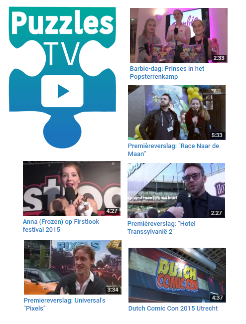

OVER PUZZLESTV

Wat is PuzzlesTV?
PuzzlesTV is een kanaal op YouTube.
Wie helpen er mee?
Lisa de Graaf, presentatrice PuzzlesTV
Callum Stamp, co-presentator PuzzlesTV
Geert de Graaf, cameraman en editor PuzzlesTV
Jos Hoekstra, co-cameraman en co-editor PuzzlesTV
Hoe wordt PuzzlesTV gemaakt?
Het logo is gemaakt door Isa Winkenius!
De website is gemaakt door Lisa de Graaf.
Monteren doen wij met Adobe Premiere pro.
En we gebruiken de volgende apparatuur:
Onze hoofdcamera Canon XH A1
Onze andere camera is de Canon HF10
De reportermicrofoon is een Sennheiser MD46
En onze richtmicrofoon is een Rode NTG-2
Waarom de naam PuzzlesTV?
Yeah.. That’s the puzzle! ;)